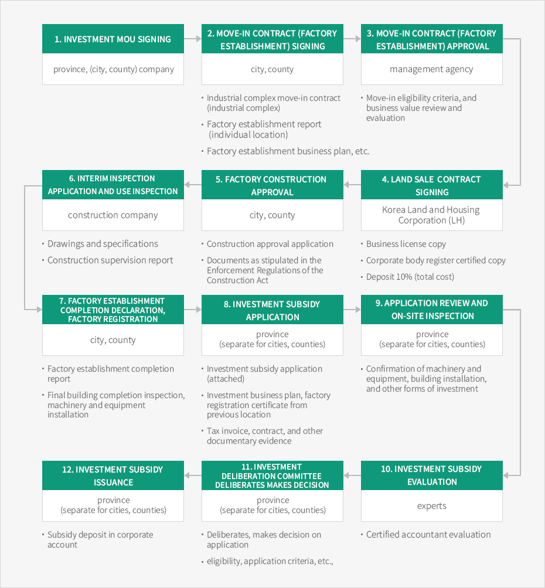

Application Procedures for Investment Subsidies
- Home
- Investment Guide
- Application Procedures for Investment Subsidies


- Investment MoU signing
province, (city, county) company
- Move-in contract (factory establishment) signing
city, county
- Industrial complex move-in contract (industrial complex)
- Factory establishment report (individual location)
- Factory establishment business plan, etc.
- Move-in contract (factory establishment) approval
management agency
- Move-in eligibility criteria, and business value review and evaluation
- Land sale contract signing
Korea Land and Housing Corporation (LH)
- Business license copy
- Corporate body register certified copy
- Deposit 10% (total cost)
- Factory construction approval
city, county
- Construction approval application
- Documents as stipulated in the Enforcement Regulations of the Construction Act
- Interim inspection application and use inspection
construction company
- Drawings and specifications
- Construction supervision report
- Factory establishment completion declaration, factory registration
city, county
- Factory establishment completion report
- Final building completion inspection, machinery and equipment installation
- Investment subsidy application
province (separate for cities, counties)
- Investment subsidy application (attached)
- Investment business plan, factory registration certificate from previous location
- Tax invoice, contract, and other documentary evidence
- Application review and on-site inspection
province (separate for cities, counties)
- Confirmation of machinery and equipment, building installation, and other forms of investment
- Investment subsidy evaluation
experts
- Certified accountant evaluation
- Investment Deliberation Committee deliberates, makes decision
province (separate for cities, counties)
- Deliberates, makes decision on application
- eligibility, application criteria, etc.
- Investment subsidy issuance
province (separate for cities, counties)
- Subsidy deposit in corporate account

※ Support for investment in tourism businesses is provided after it passes through a deliberation process by the Jeollabuk-do Tourism Industry Investment Promotion Committee (Department of Culture, Sports and Tourism).